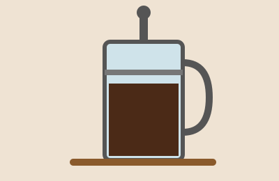

Prepara un buen café en casa

Método de prensa francesa
- Calienta el agua hasta que casi hierva (unos 93 °C).
- Muele el café grueso, parecido a la sal marina.
- Usa 1 cucharada de café por cada 100 ml de agua.
- Vierte el agua, revuelve suave y tapa.
- Espera 4 minutos y baja el émbolo despacio.
- Sirve de inmediato para que no se amargue.
Dato curioso: el Paisaje Cultural Cafetero de Colombia fue declarado Patrimonio de la Humanidad por la UNESCO en 2011.